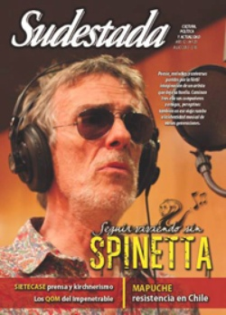

Buscar
"El límite del periodismo es la mala praxis"
Aun desde espacios de mínima independencia, la confrontación mediática determina la agenda de cada día. Pero detrás de la manipulación y la propaganda, se ocultan los intereses de los dueños. Apartado de esta lógica binaria, el periodista rosarino apuesta al pensamiento crítico como herramienta para leer una compleja realidad marcada por un escenario de aliados y enemigos.
Edición N° 120
Julio 2013
Revista bimensual
Comprar edición impresaSumario
- Seguir viviendo sin Spinetta
- El país que se sube al tren
- Christian Castillo: "Dentro del FIT hay diferencias; el mérito es que son públicas"
- Guayana. Una colonia rebelde
- "La pluralidad en los medios públicos es escasa"
- "El límite del periodismo es la mala praxis"
- Vientos de soja
- La lucha de la tierra
- Agustín Ramírez. Un corazón en el asentamiento
- "Rechazamos que el gobierno nos diga cómo nos tenemos que organizar"
- Bayer en Claypole. El hombre que hirió de muerte a Roca
Compartir Articulo
La salida de su libro Kamikazes. Los mejores peores años de la Argentina, donde analiza en profundidad virtudes y defectos de la década kirchnerista, sirve como marco para esta entrevista en tiempos de confrontación política. Rosarino, poeta y periodista, Reynaldo Sietecase persiste hoy como uno de los pocos que defiende su margen de independencia en el mapa mediático comercial, y que apuesta a analizar la realidad con la herramienta más peligrosa para voceros de Magnetto y justificadores seriales: el pensamiento crítico.
-De un tiempo a esta parte, el escenario mediático parece haber profundizado la confrontación entre dos proyectos antagónicos. ¿Cuál es tu mirada sobre este fenómeno?
-Algunas tensiones se han profundizado, pero persiste una lógica que sigo señalando como irracional: por un lado, están los que bancan todo lo que hace el gobierno en forma acrítica, y por el otro, aquellos que ven todo mal. Es que según el diario que leas hay relatos contrapuestos: parece que viviéramos en Bagdad después del bombardeo norteamericano o en Disney. El prólogo de mi libro Kamikazes precisamente se detiene en cómo contar lo que pasa, porque la verdad es que es todo un brete: cómo hacerlo sin entrar en esta lógica maniquea de buenos y malos que yo no me creo. Eso no existe en la vida y menos en la política. Lo que pasa en la Argentina es de una gran complejidad: hay un gobierno que tomó medidas que son muy positivas, pero es el mismo gobierno que no desconcentra la economía, que mantiene situaciones que después se expresan en injusticias manifiestas, que no impulsa una reforma bancaria, no apuesta a una reforma fiscal, que mantiene concentrados algunos sectores que incluso los perjudican. Es un gobierno que genera muchas contradicciones porque las tiene, pero analizarlas en términos del bien y del mal me parece ridículo...
Comentarios
Hugo Montero
Articulos más vistos


LIBRERÍA SUDESTADA

Colección infantil

Distribuidora de Libros

Suscripción

Sudestada en URUGUAY

Otros articulos de esta edición
 Nota de tapa
Nota de tapa
Seguir viviendo sin Spinetta
Poesía, melodías y universos paridos por la fértil imaginación de un artista que dejó su huella. De Almendra a Pescado ...
Guayana. Una colonia rebelde
Referencia del bloque unitario que pelea desde hace décadas por la independencia de su patria, el poeta y militante Raymond ...
Vientos de soja
El avance de un modelo cada día más dependiente del recurso agropecuario, sobre la base de transgénicos y agrotóxicos, no ...
Agustín Ramírez. Un corazón en el asentamiento
Compañero en los asentamientos organizados por los más desposeídos en San Francisco Solano, el recuerdo de Agustín pervive en todos ...
 Editorial
Editorial
El país que se sube al tren
Bayer en Claypole. El hombre que hirió de muerte a Roca
De recorrida por todo el país, Osvaldo Bayer y Marcelo Valko persisten en su pelea por defender la memoria. Atrás ...